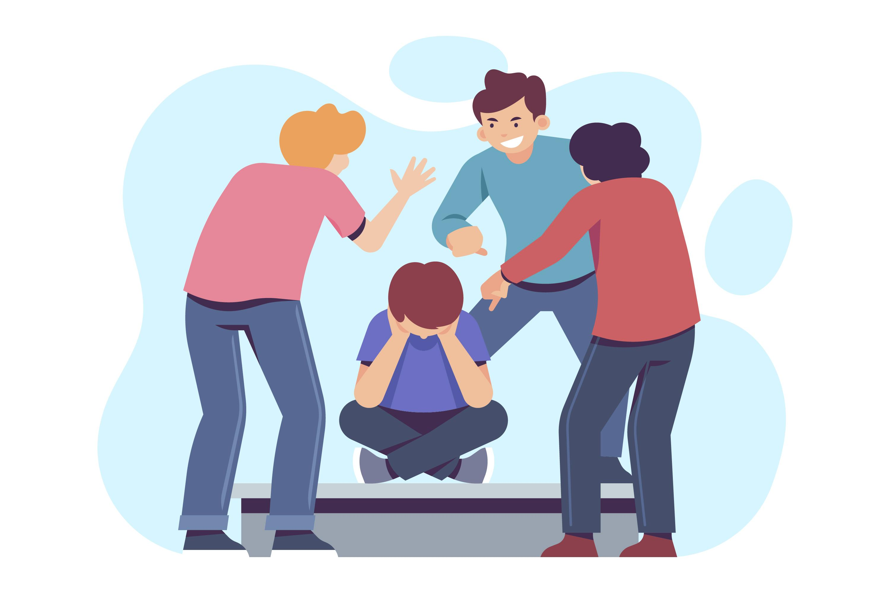
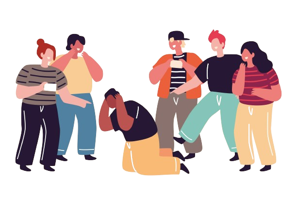
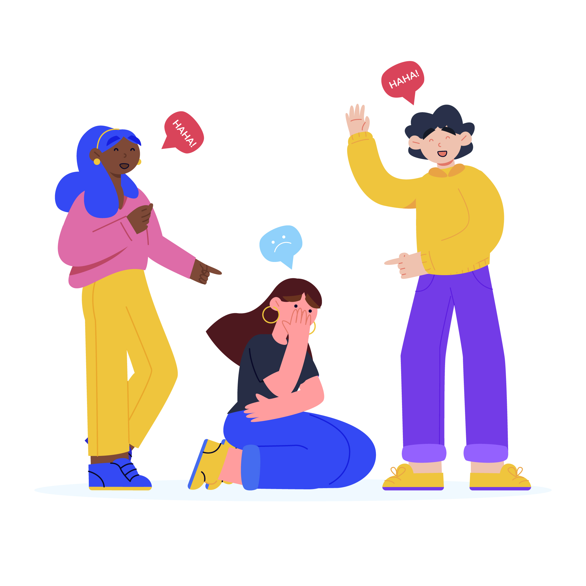
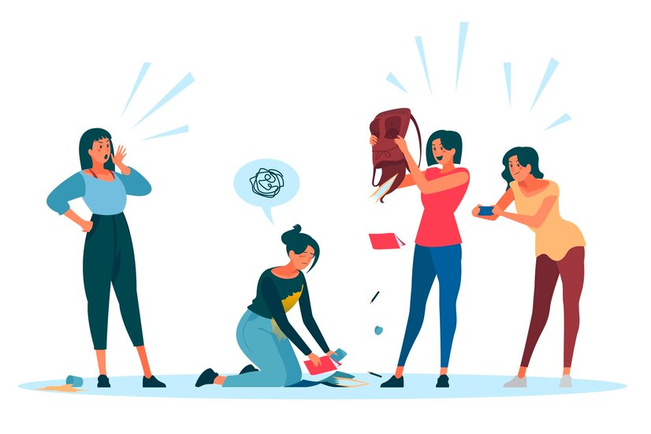
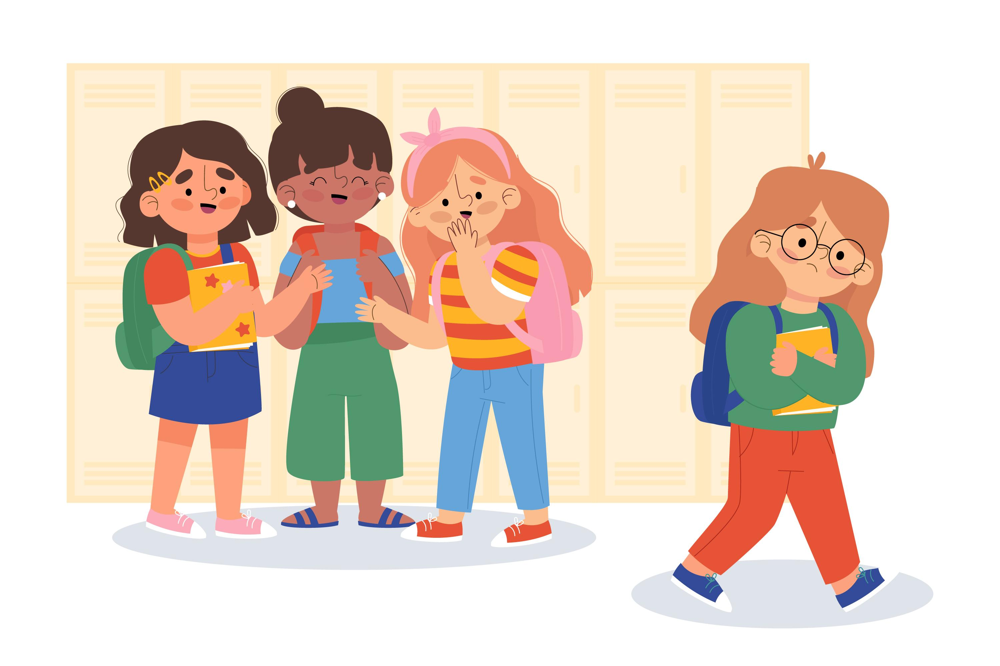
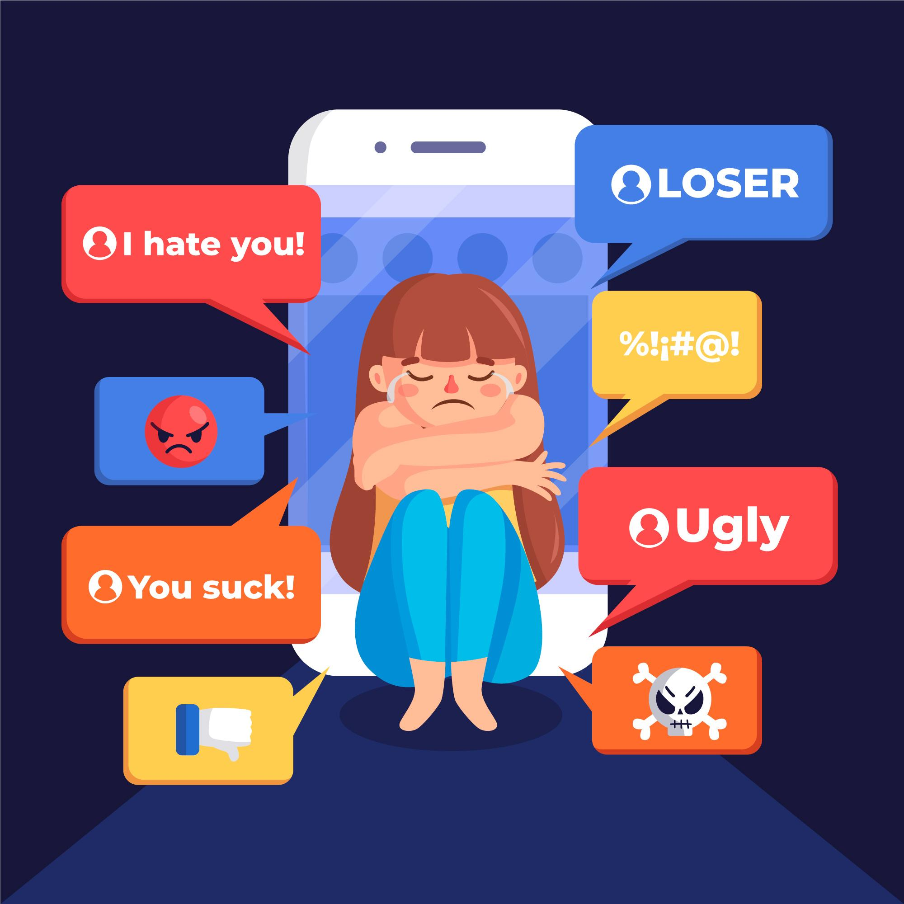
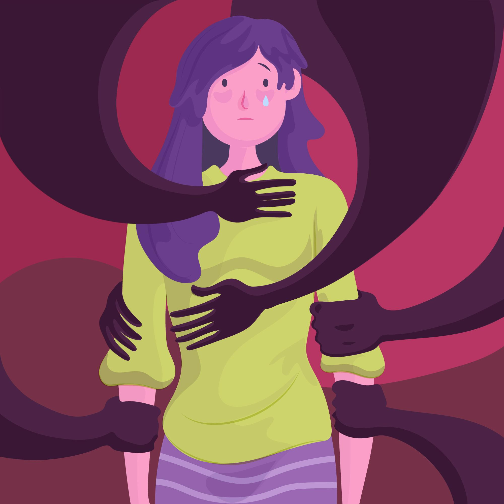

Apa itu Bullying?
Dikutip dari siloamhospitals.com. bullying adalah tindakan agresif yang biasanya dilakukan seseorang untuk mengintimidasi atau mendominasi orang lain yang dinilai lebih lemah. Perilaku penyimpangan sosial ini dapat terjadi di mana saja, mulai dari lingkungan sekolah hingga lingkungan kerja.
Menurut American Psychological Association, pengertian bullying adalah suatu bentuk tindakan agresif yang dilakukan seseorang dengan sengaja dan berulang kali dengan tujuan untuk melukai atau mengakibatkan ketidaknyamanan pada orang lain. Bullying bisa dilakukan secara fisik, lisan, maupun cara lain yang lebih halus seperti memaksa atau memanipulasi.
Jenis Jenis Bullying
Adapun jenis jenis bullying adalah:
1. Perundungan Fisik

Perundungan fisik adalah tindakan perundungan yang jelas dan langsung dirasakan oleh korban. contoh perundungan fisik adalah memukul, menendang, mencubit, menjambak, atau mendorong seseorang.
2. Perundungan Verbal

Perundungan verbal adalah perundungan yang menggunakan kata-kata seperti menghina, merendahkan, dan meremehkan dengan tujuan menyakiti korban.
3. Perundungan Non-Verbal Langsung

Perundungan non verbal langsung dilakukan tanpa kata-kata. Namun pelaku akan melakukan hinaan terhadap korban melalui ekspresi wajah, tindakan fisik, dan verbal yang membuat korban tidak nyaman.
4. Perundungan Non-Verbal Tidak Langsung

Perundungan non verbal tidak langsung dilakukan dengan melakukan tindakan yang dapat mempengaruhi lingkungan sosial korban seperti menghasut orang sekitar agar menjauhi , mengucilkan, dan mengabaikan korban.
5. Perundungan Cyber

Perundungan Cyber dilakukan di internet dan sosial media. Perundungan jenis ini biasanya membuat korban merasa tidak nyaman di internet dan media sosial dengan cara menghina akun sosial media korban membocorkan informasi korban dan sebagian nya yang dapat membuat korban tidak nyaman di internet.
6. Pelecehan Seksual

Pelecehan seksual adalah tindakan yang melecehkan korban dan merugikan korban secara seksual, korban pelecehan seksual harus mendapat penanganan yang tepat agar dapat menyembuhkan trauma. Bentuk pelecehan seksual biasanya seperti memegang area sensitif korban tanpa ijin, memanggil korban dengan kata yang bersifat seksual dan menjadikan korban sebagai materi pornografi.